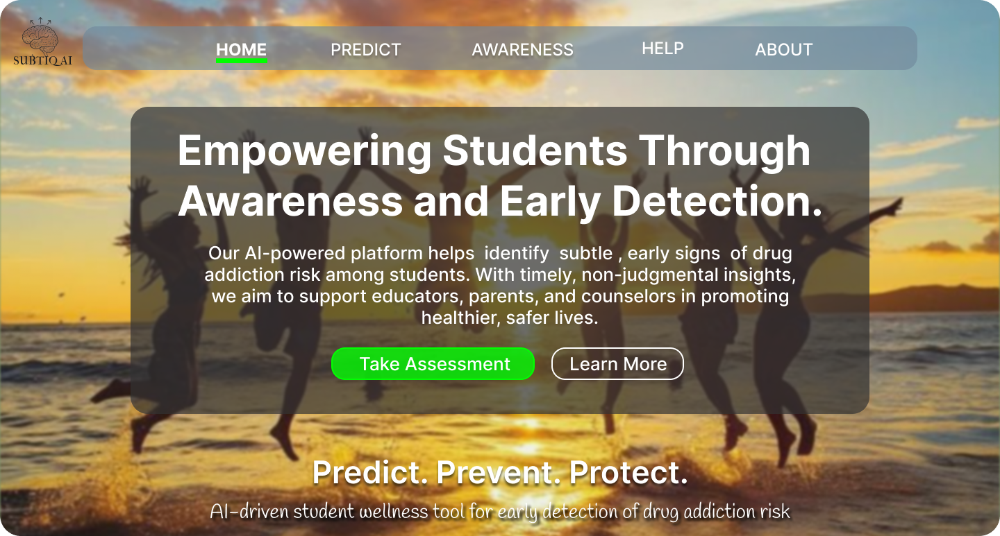
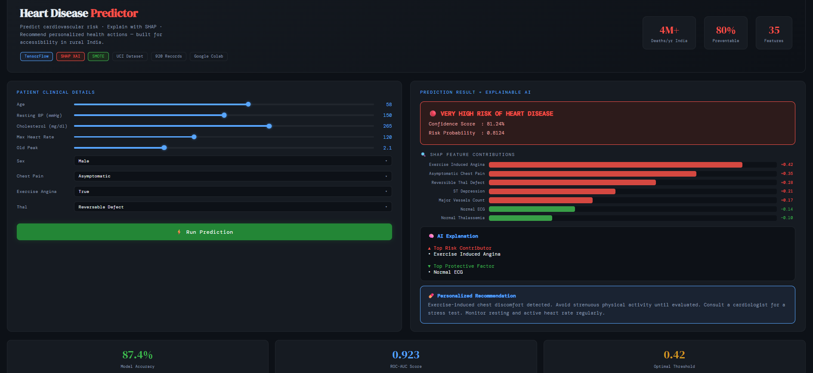
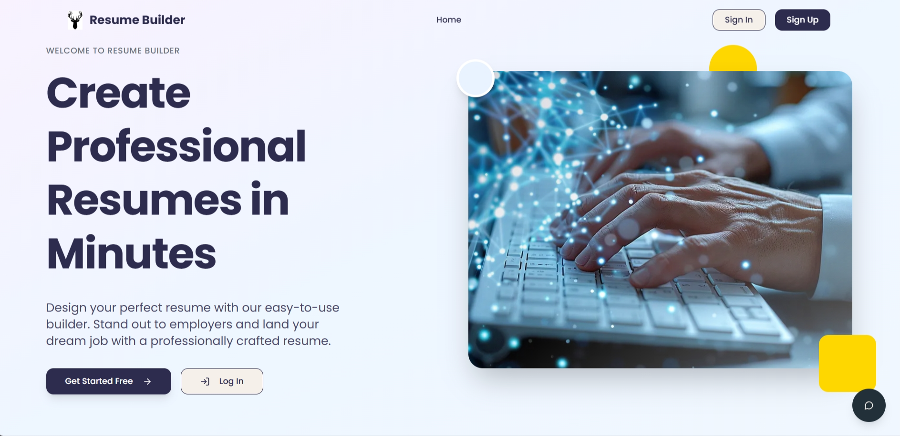
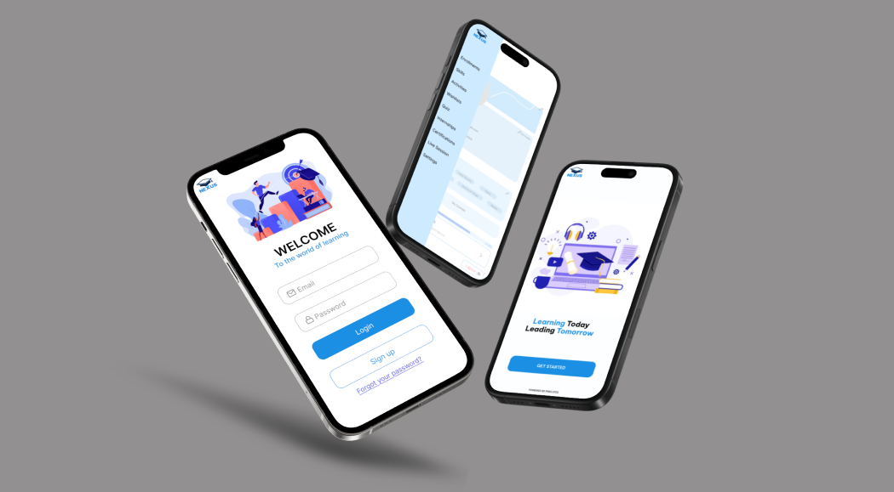
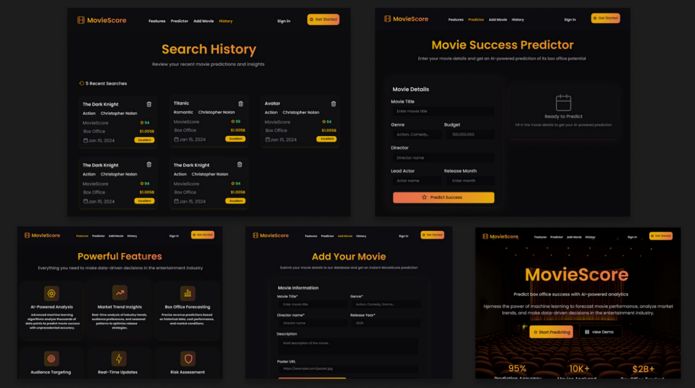

Passionate about Artificial Intelligence, Machine Learning and Data Science.
My interest lie in transforming data into meaningful insights and
developing innovative technologies that create impact.
Kochi
Available Now
ABOUT ME
I am Athira Raj, a Computer Science and Engineering graduate with a strong interest in Artificial Intelligence, Machine Learning, and Data Science. My curiosity about how data can be transformed into meaningful insights inspired me to explore these fields and build practical solutions.
Throughout my academic journey, I have worked on projects involving AI and data-driven technologies while continuously improving my skills in programming, analytics, and problem-solving. I enjoy learning emerging technologies and applying them to solve real-world challenges. My goal is to build a career in AI, Machine Learning, and Data Analytics, where I can contribute to innovative solutions while continuing to grow as a technology professional.
Python, ML/DL, Artificial Intelligence, MySQL, Java, Excel, Figma, PowerBI, JavaScript, Tableau
Bachelor of Technology (B.Tech)
Carmel College of Engineering and Technology, Alappuzha
Computer Science and Engineering
Subtiq AI, Heart Disease Predictor, Resume Builder, Movie Success Prediction Website, Nexus E-Learning App
PROJECTS
Some of my key projects showcasing innovation, design, and machine learning excellence.

An AI-powered web application for early substance abuse risk prediction among youngsters. The system was trained on a self-collected dataset of over 75,000 records gathered from young patients and trained using the machine learning models CatBoost, Random Forest, and Logistic Regression. Among all the models tested, the Random Forest algorithm achieved the highest accuracy of 99%, making it the best-performing model for risk prediction. The application was developed using Flask and Ngrok for secure deployment and accessibility.

An Explainable-AI (XAI) based Heart Disease Prediction System using Deep Learning techniques and UCI Heart Disease dataset. Analyzes patients' cardiovascular data and classifies risk into Low, Moderate, or High using a neural network. Integrates SHAP Explainable AI to identify and visualize the key factors contributing to each predictions, improving transparency.

A web app that allows users to design and download resumes in multiple formats (PDF, DOCX, TXT) with one-click export. Includes real-time autosave, cloud sync, and customizable templates while maintaining ATS-friendly structures.

A responsive and interactive e-learning platform designed to help students learn effectively through structured courses, personalized dashboards, and an intuitive interface.

A machine learning model that predicts whether a movie will be a hit or flop based on budget, cast, director, genre, and release details. Built with Random Forest, includes automated preprocessing and real-time prediction via Joblib deployment.
EXPERIENCE
Professional experience and internships in AI and technology.
CERTIFICATIONS
Professional certifications and completed courses across AI, data, and technology.
Open to AI, ML, data, and design collaborations. Reach out anytime.